Speciální řídicí sekvence
by Jiří Znamenáček
Úvod
Některé skupiny znaků jsou buď natolik významné a často používané nebo tak obtížně zapisovatelné či čitelné, že v rámci (počítačových) regulárních výrazů dostaly přiřazeno vlastní krátké jméno, tak zvanou řídicí sekvenci.
Řídicí sekvence začínají svorně na zpětné lomítko \ a patří mezi ně jak klasická označení řetězcových metaznaků, tak především speciální řídicí sekvence samotných regexpů. V dalším si je všechny (v podobě pro Python) probereme.
Číselný znak – \d \D
Sekvence \d je přímý zástupce za skupinu znaků [0-9], tedy zachytává jednotlivé číslice. Jejím doplňkem je řídicí sekvence \D, která je naopak ekvivalentní skupině [^0-9], tj. všechno kromě číslic.
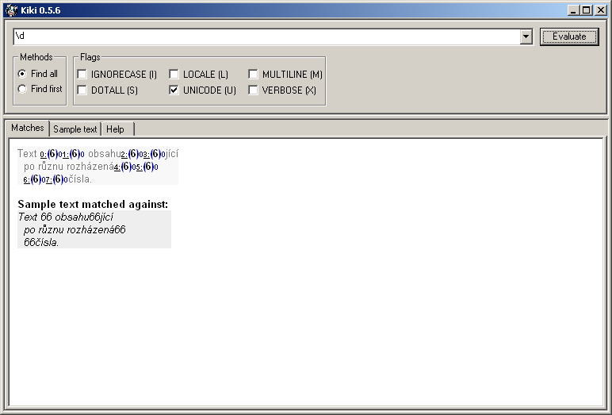
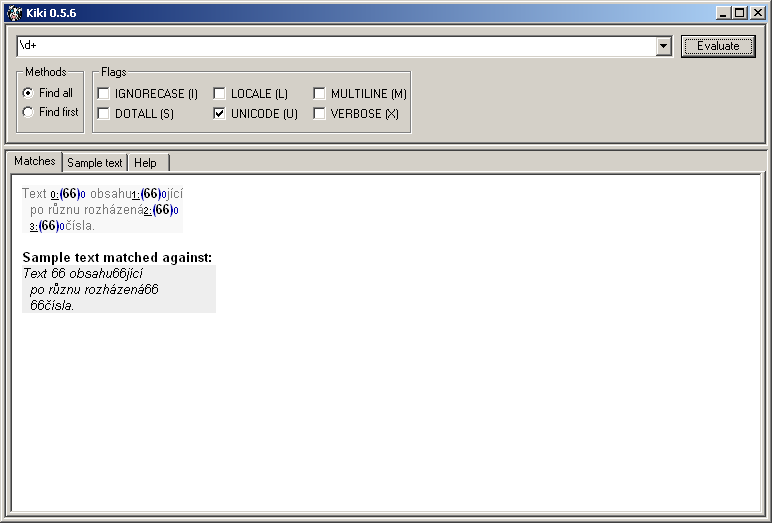
Alfanumerický znak – \w \W
Zkratkou pro alfanumerické znaky je řídicí sekvence \w, která je tedy ekvivalentní skupině [a-zA-Z0-9_]. Její doplněk \W je tedy ekvivalentní skupině [^a-zA-Z0-9_] a zachytí vše kromě alfanumerických znaků.
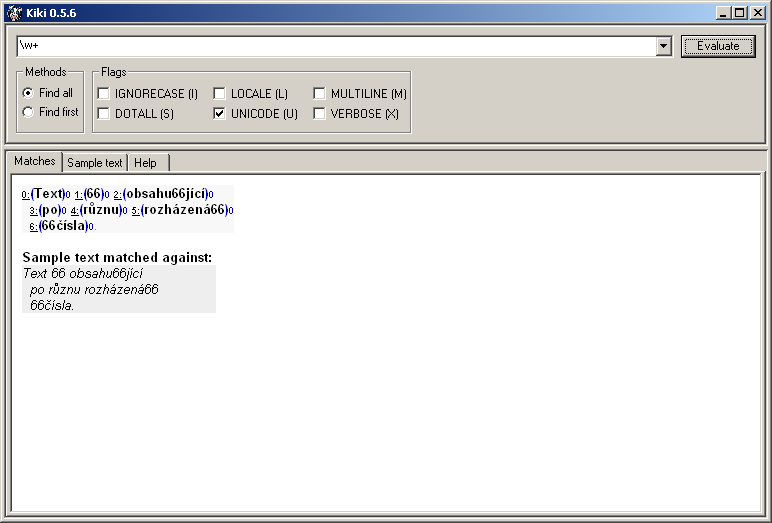
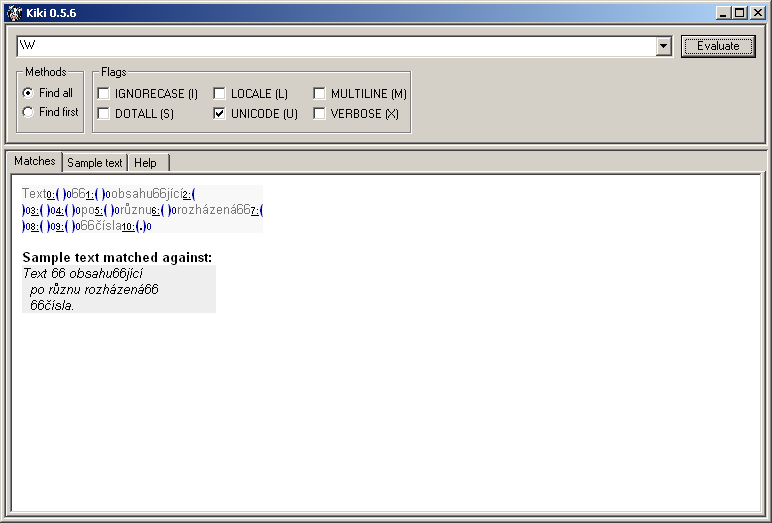
PS: Podtržítko _ sice evidentně alfanumerický znak není, ale jak už jsme viděli dříve, je prakticky standardní součástí (povolených) identifikátorů v programovacích jazycích, tudíž je ze zcela praktických důvodů součástí uvedené množiny. (Narozdíl od spojovníku -‒, který by v běžných slovech našel uplatnění častěji ;-)
Znak hexadecimálně – \xhh
Je-li to nutné nebo z nějakých důvodů vhodné, je též možno zadat ASCII-znak pomocí jeho hexadecimální hodnoty řídicí sekvencí \xhh.
Znak oktalově – \ooo
Je-li to nutné nebo z nějakých důvodů vhodné, je též možno zadat ASCII-znak pomocí jeho oktalové hodnoty řídicí sekvencí \ooo.
\1, \2, … , \99 – ty nenahrazují znak jeho číselnou hodnotou nýbrž jsou odkazem na odpovídající regexpovou skupinu.
Bílý znak – \s \S
Nesmírně užitečnou je sekvence \s, která odchytává všechny bílé znaky, tedy podle pythonovského značení speciálních řetězcových znaků skupinu [ \t\n\r\f\v]. Jejím doplňkem je řídicí sekvence \S aneb [^ \t\n\r\f\v], která naopak zachytává vše kromě bílých znaků.
Začátek a konec řetězce – \A \Z
Řídicí sekvence \A a \Z jsou obdobou ^ a $:
-
\A– hledá výskyty regexpu pouze na začátku řetězce -
\Z– hledá výskyty regexpu pouze na konci řetězce
Je tu ale jeden důležitý rozdíl – narozdíl od ^ a $ nejsou \A a \Z ovlivněny příznakem MULTILINE. V důsledku tak odchytávají výskyty regexpu vždy a pouze pouze na začátku, resp. konci řetězce.
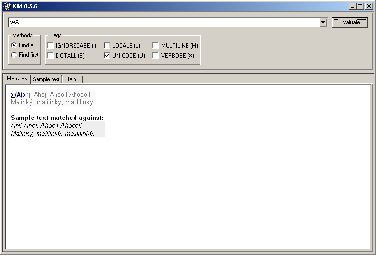
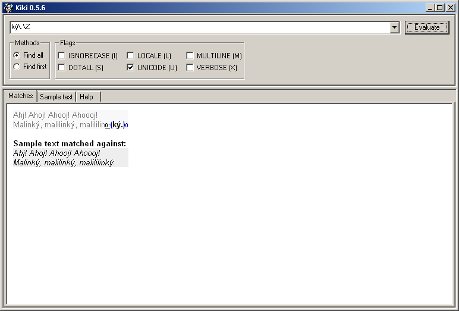
Hranice slov – \b \B
Velmi užitečnou je speciální sekvence \b rozpoznávající hranice slov a její opak \B, který naopak „zabere“ všude mimo hranice slov.
Mějte přitom na paměti, že slovo je zde definováno jako sekvence podtržítek a alfanumerických znaků, přičemž konkrétní význam termínu alfanumerický závisí na aktuální hodnotě příznaků UNICODE a LOCALE.
r"".
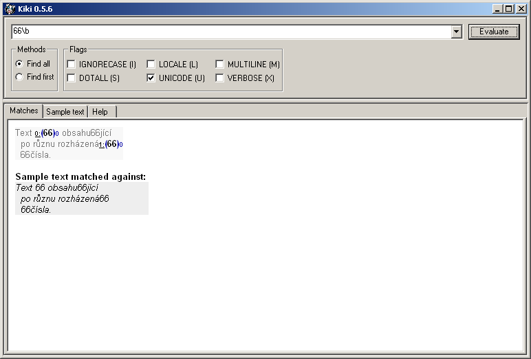
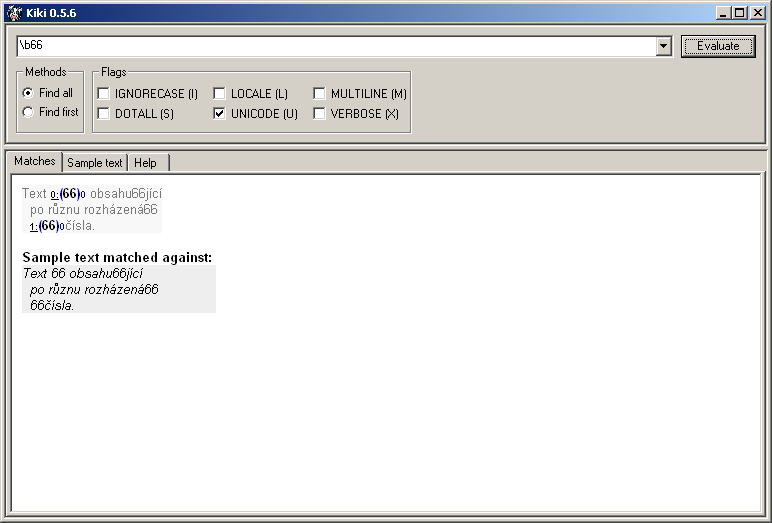
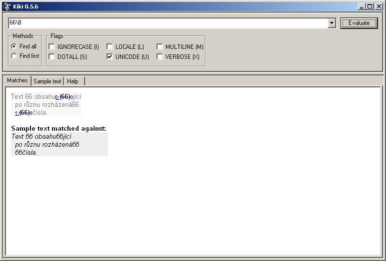
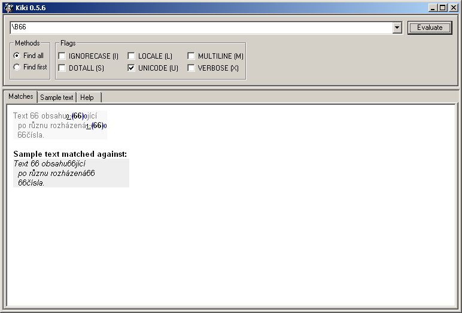
Běžné řetězcové metaznaky – \a [\b] \f \n \r \t \v
S drobným zádrhelem v podobě znaku \b se dají v pythonovských regexpech normálně použít všechny řetězcové speciální znaky, což znamená:
| speciální znak | význam |
|---|---|
\a |
BEL (ASCII Bell) |
\b |
BS (ASCII Backspace) |
\f |
FF (ASCII Formfeed aka NP form feed, New Page) |
\n |
LF (ASCII Line Feed aka NL line feed, New Line) |
\r |
CR (ASCII Carriage Return) |
\t |
TAB (ASCII Horizontal Tab) |
\v |
VT (ASCII Vertical Tab) |
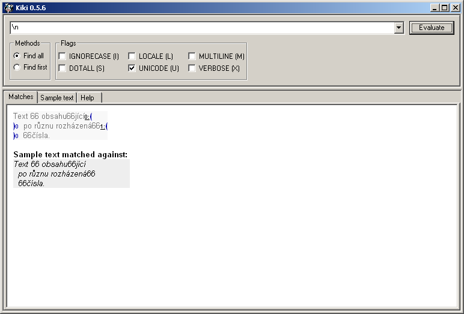
PS: Kromě toho se můžete odvolávat na exotické znaky pomocí jejich čísla (\uxxxx 16-bitově nebo \Uxxxxxxxx 32-bitově) nebo jména (\N{Jméno}) v unicodové tabulce.
Poznámky
Kromě toho uvnitř regexpových řetězců platí další běžné řetězcové sekvence:
-
\\– použití zpětného lomítko v jeho skutečném významu a ne jako uvozovatele řídicích sekvencí -
\"– použití uvozovek tam, kde by to jinak kvůli jejich zapouzdření do uvozovek nešlo -
\'– použití apostrofu tam, kde by to jinak kvůli jeho zapouzdření do apostrofů nešlo